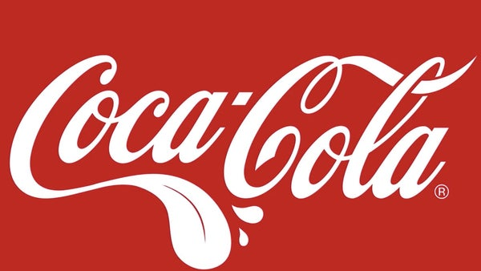

The Coca-Cola Company The Coca-Cola Company es la mayor compañía mundial de bebidas que opera en más de 200 países con un portafolio de más de 3000 productos de bebidas como agua con o sin gas, jugos y extractos de jugo, tés, cafés bebidas deportivas y bebidas energéticas Coca-Cola (conocida comúnmente como Coca en muchos países hispanohablantes; en inglés también conocida como Coke) es una bebida gaseosa y refrescante vendida a nivel mundial en tiendas, restaurantes y máquinas expendedoras en más de doscientos países o territorios. Es el principal producto de The Coca-Cola Company, de origen estadounidense. En un principio, cuando la inventó el farmacéutico John Pemberton, fue concebida como una bebida medicinal patentada, aunque fue adquirida posteriormente por el empresario Asa Griggs Candler, que hizo de la bebida una de las más consumidas del siglo xx, y del siglo xxi. La compañía produce un concentrado que luego vende a varias empresas embotelladoras licenciadas, las cuales mezclan el concentrado con agua filtrada y edulcorantes para, posteriormente, vender y distribuir la bebida en latas y botellas de plástico o de vidrio en los comercios. También existen variantes, fabricadas por la misma empresa, como la Coca-Cola Light (también llamada Diet Coke o Coca-Cola Diet); otras son la Coca-Cola sin cafeína, Coca-Cola Cereza, Coca-Cola Zero, entre otras lanzadas especialmente, como la de sabor a limón. Es la marca más comprada a nivel mundial,1 y su mayor competidora es Pepsi, también una bebida estadounidense. Entre otras cosas, además del color rojo predominante en sus etiquetas, es reconocida también gracias a su estilizada botella, presentada en el año 1915,2 cuyo diseño sigue siendo de exclusividad para el producto, en casi todas las formas en las que es ofrecido.
Sin lugar a dudas, la estrategia publicitaria que más crédito le ha traído a Coca-Cola, fue el término "Coke", utilizado para identificar en forma abreviada al producto. Sin embargo, este término no surgiría de las oficinas de Coca-Cola, sino más bien del imaginario público, quienes en forma de apelativo comenzaban a denominar a la Coca-Cola simplemente como "Coke". A pesar de los vanos intentos por parte de sus directivos de hacer valer las cosas por su nombre, finalmente tomarían esta denominación como un buen agente publicitario, a la vez de convertirlo en una marca registrada más en el año 1941. Finalmente, la consolidación del por qué el uso de "Coke" para denominar a la Coca-Cola, sería impuesto a través de una campaña publicitaria protagonizada por un personaje ideado por la compañía, que fuera bautizado como "Sprite Boy" (aunque sin relación con la bebida de lima limón que se lanzaría años después). En ella, el personaje venía acompañado por un recado en el cual aclaraba el por qué del nuevo término que servía de identificación para la Coca-Cola.16 Con la identificación consolidada, prontamente la bebida se popularizaría gracias al uso de su apelativo. Asimismo, este término también comenzaría a ser tomado para identificar a la estilizada y característica botella de Coca-Cola, presentada en 1915 y siendo conocida como "Botella Coke". Años más tarde y con el afán de darle usos propios a su apelativo, Coca-Cola lanzaría una línea de bebidas bajo la marca "Coke", la cual presentaba variantes como la Diet Coke, la Cherry Coke o la New Coke. Finalmente, este término comenzaría paulatinamente a ser dejado de lado, teniendo apenas una pequeña ventana en las etiquetas de las botellas de Coca-Cola como único espacio dentro del portafolio de productos de The Coca-Cola Company.17